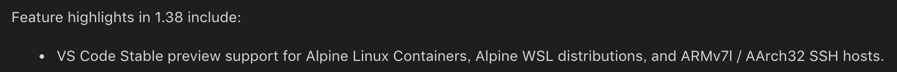

DockerでVue.jsの開発環境を構築する
概要
フロントの勉強としてVue.jsの開発環境を整備するときに、せっかくなのでDockerを使って環境を構築してみました。
環境
- macOS Mojave 10.14.5
- Docker version 18.09.2
- Visual Studio Code version 1.35
手順
今回は勉強がてらdocker-composeを利用します。とは言っても「書くよ！」ってだけで複雑なことは全然やってないです。
Dockerfileの作成
FROM node:lts-alpine
WORKDIR /app
RUN apk update && \
npm install -g npm @vue/cliただし、現時点（2019年7月3日）でVisual Studio CodeのRemoteはAlpine Linuxに対応していないので、Remoteを利用したい場合は別のイメージを使った方がいいと思われます（1敗）。以前記事にしていたので「Vue.jsの環境もリモートで開発だぁ！」とか思ってたんですけど出鼻をくじかれました。
なお、Alpine LinuxはVS Code Insidersではサポートされているため、そのうち正式対応するはずなので正座して待機しようと思います。
Alpine Linuxに対応しました（2019年9月8日追記）
vscodeのバージョン1.38にてAlpine Linux製コンテナへRemote接続できるようになりました！

docker-compose.ymlの作成
version: '3'
services:
vue_app:
build: .
ports:
- 1234:8080
volumes:
- .:/app
stdin_open: true
tty: true
command: /bin/shコンテナーのビルド
docker-compose buildコンテナーの起動
docker-compose up -ddocker psコマンドを叩くとコンテナーが起動しているはず。
$ docker ps
CONTAINER ID IMAGE COMMAND CREATED STATUS PORTS NAMES
9fcc61e05285 dockapp_vue_app "docker-entrypoint.s…" 2 minutes ago Up 2 minutes 0.0.0.0:9000->9000/tcp dockapp_vue_app_1コンテナーに入る
docker exec vue_app shvueプロジェクトの作成
コンテナーに入るとプロンプトが変わるので、vueコマンドを叩いてプロジェクトを作成します。
vue create vue_app3系のvue cliをインストールしているのでcreateを利用します（2.x系だとinit webpack hogeだった）。とくにこだわりがなければエンターを連打。しばらくすると・・・
Successfully created project vue_app.
Get started with the following commands:
$ cd vue_app
$ npm run serveとなり、準備完了です。
vueプロジェクトの起動とアクセス
コンテナー上でフォルダを移動してnpm runします。
cd vue_app
npm run serve正常に起動したらhttp://localhost:1234/にアクセスする。

上記のようなページが表示されたら環境構築は完了です。
まとめ
Pythonに引き続き、Vue.jsもDockerで環境構築してみましたが、ローカルを汚さない・いざとなったら潰して新しく作ればいいってのはホントに気軽でいいですね。あとはコーディングするだけです（血涙